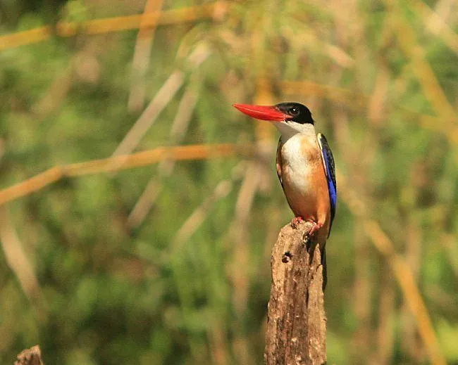

鸟类 · 动物界
蓝翡翠 Halcyon pileata

头部乌黑、颈侧洁白的大型翠鸟，背羽蓝紫具金属光泽，腹部栗红。常静立水边树枝，突袭小鱼与蟹类，飞行时蓝白闪烁。
- 分类
- 门脊索动物门纲鸟纲目佛法僧目科翠鸟科属翡翠属
- 栖息环境
- 低山溪流、河流、池塘、水库、稻田与红树林边缘，需要有土崖或沙坡可供挖洞营巢。
- 地理分布
- 繁殖于中国东部、南部、台湾及朝鲜半岛；冬季南迁至中南半岛、马来半岛等地。
- 保护级别
- IUCN 红色名录列为无危（LC）；中国列入“三有”陆生野生动物名录。
物种志
蓝翡翠体长约二十七至三十一厘米，体重八十至一百一十克。头部黑色，颈侧有一道宽阔的白环，上体深蓝至紫蓝色，羽色具强烈的金属光泽；下体栗红至橙棕色，翼下覆羽白色。喙粗长鲜红，虹膜深褐，脚红色。雌雄羽色相似，雌鸟色泽略暗淡。飞行时黑白蓝三色对比鲜明，常被误认为啄木鸟。
它栖息于低山丘陵的河流、溪流、池塘、稻田与红树林边缘，常单独停栖在水边枯枝或电线上，长时间静止观察，发现小鱼、虾、蟹或水生昆虫后急速俯冲入水捕捉，再返回栖枝摔打猎物。繁殖期在河岸土崖或沙坡上挖掘隧道状巢洞，每窝产卵四至六枚。蓝翡翠繁殖于东亚，包括中国东部、南部及朝鲜半岛，冬季南迁至东南亚。中国种群列入“三有”名录，受栖息地水质和河岸硬化影响。
形态与习性
- 体长27–31 厘米
- 体重80–110 克
- 食性小鱼、虾、蟹与水生昆虫
- 繁殖河岸土崖挖洞营巢，每窝 4–6 枚
- 分布东亚繁殖，东南亚越冬
- 保护级别IUCN 无危；“三有”动物
趣味知识
- 头黑、颈白、背蓝、腹栗红，四种颜色界限分明。
- 常在同一根枯枝上长时间守候，俯冲入水几乎不溅水花。
- 飞行时蓝紫色背羽在阳光下像金属片一样闪光。